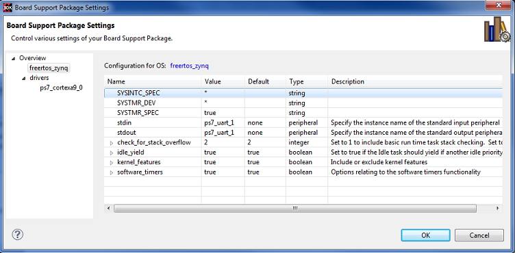

When you create a Board Support Package (BSP) for external tools, you can configure the BSP parameters in the Board Support Package Settings dialog box.
You can also configure BSP settings by right-clicking a BSP in your project and selecting Board Support Package Settings.

The Board Support Package Settings window for external tools contains the following functions:
Name |
Function |
|---|---|
OS Type |
Specifies the name of the BSP. |
OS Version |
Specifies the version of the BSP. |
Name |
Name of the Parameter. |
Value |
User-specified value. Contains the default value (as specified in the Default column) if you do not specify a value. |
Default |
Default value of the parameter. |
Type |
Parameter value type, such as string, integer, bool, array, and peripheral instance. |
Description |
Description of the parameter. |